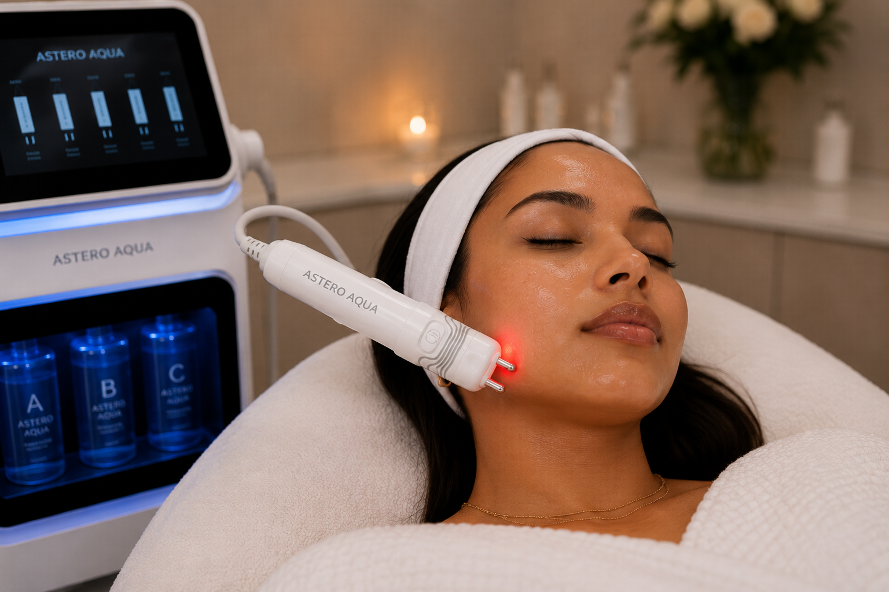
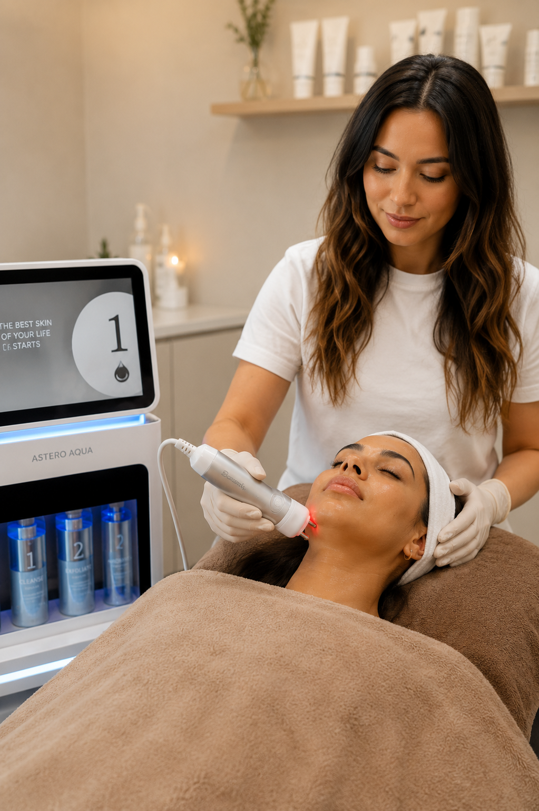

Huidversteviging
Radiofrequentie verwarmt gecontroleerd de diepere huidlagen. Deze thermische prikkel ondersteunt collageencontractie en kan de huid steviger laten aanvoelen.

RF Skin Lifting gebruikt radiofrequentie-energie om gecontroleerde warmte in de diepere huidlagen op te wekken.
Deze gecontroleerde verwarming is bedoeld om bestaand collageen te laten samentrekken en het natuurlijke proces van collageenremodellering en nieuwe collageenvorming te stimuleren.
Het resultaat ontwikkelt zich geleidelijk: de huid kan steviger, gladder en strakker ogen, terwijl fijne lijntjes en milde huidverslapping minder opvallend kunnen worden.
Radiofrequentie verwarmt gecontroleerd de diepere huidlagen. Deze thermische prikkel ondersteunt collageencontractie en kan de huid steviger laten aanvoelen.
Na de behandeling gaat het natuurlijke herstelproces verder. In de weken en maanden erna kan nieuw collageen worden gevormd en bestaand collageen worden gereorganiseerd.
De behandeling kan helpen bij milde huidverslapping, fijne lijntjes en een minder strakke kaak- of gezichtscontour, met een geleidelijk en natuurlijk ogend resultaat.

De intensiteit en behandeltijd worden afgestemd op het behandelgebied, jouw huidconditie en het gebruikte RF-systeem.
De huid wordt gereinigd en voorbereid zodat de RF-kop gelijkmatig over het behandelgebied kan worden bewogen.
Het apparaat geeft radiofrequentie-energie af. De weerstand van het weefsel zet deze energie om in gecontroleerde warmte in de behandelde huidlagen.
De huid wordt stapsgewijs en gecontroleerd opgewarmd. Door gecontroleerde warmte wordt de aanmaak van collageen gestimuleerd, wat bijdraagt aan een stevigere huid. Tijdens de behandeling kunt u kiezen tussen twee krachtige serums: Salmon DNA Gold Ampoule of SkinBooster PDRN EXO. Deze verzorgende formules ondersteunen de hydratatie, verzorging en het herstel van de huid.
Microstroom werkt als een work-out voor je gezichtsspieren. Het geeft de spieren een energieboost, helpt de huid stevig en in model te houden en ondersteunt de contouren van het gezicht. De Microlift combineert dit met roodlichttherapie voor een anti-agingeffect.
Na afloop wordt de huid verzorgd. Een tijdelijke warmte, lichte roodheid of gevoeligheid kan voorkomen en trekt doorgaans weer weg.
RF Skin Lifting kan passen wanneer je op een niet-chirurgische manier milde huidverslapping wilt aanpakken en de stevigheid, textuur of contouren van de huid wilt ondersteunen.
Radiofrequentie wordt al jaren onderzocht als niet-ablatieve methode voor huidversteviging en huidverjonging. De techniek maakt gebruik van gecontroleerde thermische energie in de dermis.
Onderzoek naar niet-invasieve radiofrequentie laat zien dat gecontroleerde verwarming van de dermis collageen kan laten contraheren en processen van neocollagenese kan stimuleren.
Klinische studies hebben veranderingen na RF-behandelingen beoordeeld met klinische fotografie, huidmetingen en in sommige onderzoeken histologische analyse van collageen en huidstructuur.
Studies rapporteren verbeteringen in onder meer huidstevigheid, fijne lijntjes en huidtextuur. De mate van resultaat verschilt per RF-techniek, behandelinstelling, behandelreeks en persoon.
Deze bronnen beschrijven verschillende vormen en apparaten van radiofrequentiebehandeling. Resultaten uit onderzoek zijn daarom niet automatisch gelijk aan het resultaat van iedere individuele RF Skin Lifting-behandeling.